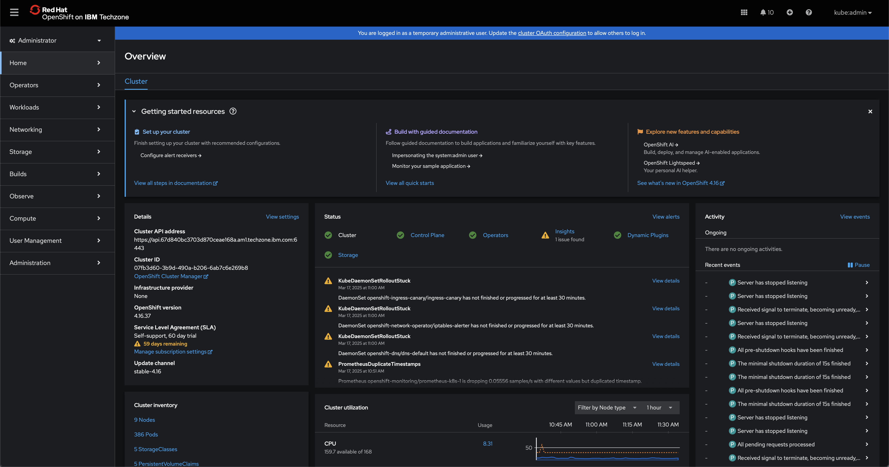

IBM watsonx Code Assistant for Practitioners Level 4
| Description | IBM watsonx Code Assistant for Practitioners Level 4 |
| Author(s) | Christopher Bienko (cdbienko@us.ibm.com) |
| Copyright | Copyright © 2025 IBM |
Under construction.
On-Premises Installation and Deployment ↵
Objectives and requirementsOn-Premises Installation and Deployment
i. About this lab
The On-Premises Installation and Deployment module provides comprehensive instructions for how to prepare, configure, and deploy a simulated on-premises cluster for IBM watsonx Code Assistant (WCA) on environments hosted by IBM Technology Zone (ITZ).
By completing this module, participants will have learned and applied the skills necessary for deploying WCA on a client's on-premises infrastructure. The complete stack of technologies and services that you will deploy include:
-
Red Hat OpenShift Container Platform v4.18: a unified application development platform that lets clients build, modernize, and deploy applications at scale on their choice of hybrid cloud infrastructure.
-
IBM Cloud Pak for Data v5.1.x: a set of services comprising a data fabric solution for data governance, data engineering, data analysis, and AI lifecycle tasks.
-
IBM Software Hub v5.1: a cloud-native solution that clients use to install, manage, and monitor IBM solutions on Red Hat OpenShift Container Platform.
-
IBM watsonx Code Assistant v5.1: a generative AI coding companion that provides contextually aware assistance for programming languages.
Special acknowledgement and thanks to IBM colleagues Coralie Jonvel, Nelson Nunes, and Noe Samaille for adaptation of their deployment instructions for watsonx.ai on Red Hat OpenShift.
INSERT ARCHITECTURE GRAPHIC AND DESCRIPTION HERE
GPUs NOT SUPPORTED FOR ON-PREMISES DEPLOYMENTS
Resource and budget constraints for IBM Technology Zone and the IBM Enablement teams means that GPUs are unavailable for the on-premises portion of the Level 4 curriculum.
The NVIDIA A100 or H100 GPUs required are simply too cost-prohibitive to be made available for individual IBMers and business partners. GPUs cannot be shared in a multi-tenant access pattern for IBM watsonx Code Assistant — and as such at minimum two of such cards would need to be made available for every L4 reservation. These costs are beyond the scope of what can be supported by this training.
Participants will have access to GPUs for the IBM Cloud (SaaS) portion of the Level 4 curriculum.
ii. Infrastructure and resource requirements
Requirements specific to the hands-on environment are outlined in the section below. Comprehensive details about the hardware requirements for x86_64 cluster services are available from IBM Software Hub documentation.
Although the hands-on environment that will be provisioned in the next module utilizes a templated, pre-defined ITZ infrastructure configuration, it will be useful for those enrolled to understand the resources required to reproduce a similar cluster in real-world client scenarios. This includes details about the CPU, memory, GPU, and other hardware components required to support the necessary cluster services.
IBM Software Hub platform Additional details available from IBM Documentation
| Node Role | Number of Services | Minimum Available vCPU | Minimum Memory | Minimum Storage |
|---|---|---|---|---|
| Control plane | 3 (for high availability) | 4 vCPU per node(This configuration supports up to 24 worker nodes.) | 16 GB RAM per node. This configuration supports up to 24 worker nodes. | No additional storage is needed for IBM Software Hub. |
| Infra | 3 (recommended) | 4 vCPU per node. This configuration supports up to 27 worker nodes. | 24 GB RAM per node(This configuration supports up to 27 worker nodes.) | See the Red Hat OpenShift Container Platform documentation for sizing guidance. |
| Worker (compute) | 3 or more worker (compute) nodes | 16 vCPU per node | Minimum: 64 GB RAM per nodeRecommended: 128 GB RAM per node | 300 GB of storage space per node for storing container images locally. If you plan to install watsonx.ai, increase the storage to 500 GB per node. |
| Load balancer | 2 load balancer nodes | 2 vCPU per node | 4 GB RAM per node. Add another 4 GB of RAM for access restrictions and security control. | Add 100 GB of root storage for access restrictions and security control. |
IBM Cloud Pak Foundational Services Additional details available from IBM Documentation
| vCPU | Memory | Storage | Notes |
|---|---|---|---|
| 4 vCPU | 5 GB RAM | Reference the v4.10 hardware requirements and recommendations. | Required. IBM Cloud Pak Foundational Services are installed once for each instance of IBM Software Hub on the cluster. |
Red Hat OpenShift Container Platform (single node) Additional details available from IBM Documentation
| VM Role | Minimum Available vCPU | Minimum Memory | Minimum Storage |
|---|---|---|---|
| Bastion node | 4 vCPU | 8 GB RAM | Allocate a minimum of 500 GB of disk space. The disk can be: in the same disk as the general bastion node storage; in a separate disk on the bastion node; or on external storage. |
| Worker (compute) | 16 vCPU | 64 GB RAM | Allocate a minimum of 300 GB of disk space on the node for image storage. |
IBM watsonx Code Assistant Additional details available from IBM Documentation
| vCPU | Memory | Storage | Notes |
|---|---|---|---|
| Operator pods: 0.1 vCPU | Operator pods: 0.256 GB RAM | Persistent storage: 120 GB | Minimum resources for an installation with a single replica per service |
| Catalog pods: 0.01 vCPU | Catalog pods: 0.05 GB RAM | Ephemeral storage: 0.4 GB | The service requires at least two GPUs |
| Operand: 7 vCPU | Operand: 25 GB RAM | Image storage: Up to 107 GB with all models | GPU support is limited to: NVIDIA H100 GPUs with 80 GB RAM |
iii. Prerequisites checklist
Register for an IBM Technology Zone account
Participants require access to ITZ in order to reserve an environment and complete the hands-on work. If you do not yet have an account with the ITZ, you will need to register for one.
Obtain an IBM Entitlement API key
Participants require an entitlement API key to proceed with the on-premises installation. In order to retrieve the key:
-
Use your IBMid and password to log in to the Container Software Library.
-
Click the Entitlement keys[A] tab from the navigation menu.
-
Click Add new key[B] to generate a new entitlement key.
-
Select Copy[C] to capture the entitlement key to the clipboard.
-
Paste and save the entitlement key to a text file on your local machine.
iv. Troubleshooting and support
If you require assistance or run into issues with the hands-on lab, help is available.
-
Environment issues: The lab environment is managed by IBM Technology Zone. Opening a support case ticket is recommended for issues related to the hands-on environment (provisioning, running, and so on.)
-
Product questions: For questions related to IBM watsonx Code Assistant capabilities, sales opportunities, roadmap, and other such matters, open a thread on the #watsonx-code-assistant Slack channel.
v. Next steps
In the following module, you will provision an OpenShift Container Platform cluster via IBM Technology Zone, which will serve as the basis for the on-premises environment.
Reserve an environmentOn-Premises Installation and Deployment
i. Configuring the IBM Technology Zone reservation
The foundation for the on-premises environment utilizes the OpenShift Cluster (VMware on IBM Cloud) - UPI - Public template from the collection of IBM Technolgy Zone (ITZ) Certified Base Images.
-
Click the link below to request a reservation directly from ITZ:
-
From the Single environment reservation options, select Reserve now[A].
-
Supply additional details about the ITZ reservation request:
RESERVATON POLICY NOTICE
After selecting
Educationfor the Purpose field, you may receive a pop-up notification stating thatthis environment is now being redirected to the OCP base image hosted On-Prem for Education and Test. You can safely ignore this notice and close it by clicking the X in the top-right corner.Do not configure using the Poughkeepsie-based resource that the notice attempts to redirect you to — it will not allow you to configure the necessary hardware specifications. Continue with the ITZ reservation request form as detailed below. If the pop-up appears again later in the configuration steps, continue to disregard the notice.
Field Value Name Give your reservation a unique name. Purpose EducationPurpose Description Give your reservation a unique description. Preferred Geography Select the region and data center geographically closest to your location. End Date and Time Select a time and date for when the reservation will expire. OpenShift Version 4.16Worker Node Count 3Worker Node Flavor 32 vCPU x 128 GB - 300 GB ephemeral storageStorage ODF - 2 TBOCP/Kubernetes Cluster Network 10.128.0.0/14OCP/Kubernetes Service Network 172.30.0.0/16Enable nested hardware virtualization on workers No -
When satisfied, verify that you agree to the Terms and Conditions for the environment and finalize your reservation request by clicking Submit.
Navigate to the My Reservations tab of the ITZ to monitor the progress of your reservation. While "Provisioning"[A], the reservation will be marked with a yellow tile. Wait for the ITZ reservation to be marked as "Ready"[B]before continuing.
PROVISIONING TIMES
This operation will take approximately 90 - 120 minutes to complete.

ii. Accessing the cluster
Once the cluster has been successfully deployed, you will receive an email with the header: Reservation Ready on IBM Technology Zone.
-
Confirm that the ITZ email states that Status Update: Ready[A]. Follow the link provided in the email, or access the My Reservations tab on ITZ to access your reservation.
-
Scroll down the page until you reach the Reservation Details section. Record the following connection details for the OpenShift Container Platform (OCP) cluster to a notepad:
- Desktop URL (interchangeable with OCP Dashboard URL)[A]
- Cluster Admin Username[B]
- Cluster Admin Password[C]
- API URL[D]
- Bastion Username[E]
- Bastion Password[F]
- Bastion SSH Connection[G]
-
Click the blue Open your IBM Cloud environment button at the top of the page to launch a new browser window for accessing the OCP cluster.
Choose the kube:admin log in option and then provide the following credentials:
- Username:
kubeadmin - Password: Cluster Admin Password recorded in Step 6
At this stage, you should have successfully logged in to the OCP Dashboard.

- Username:
iii. Next steps
In the following module, you will access and configure the cluster's bastion node.
Bastion host setupOn-Premises Installation and Deployment
The following section is based off of IBM Documentation write-ups that detail how to install IBM Software Hub on a Red Hat OpenShift Container Platform cluster. Reference the instructions in full at the following resource: Installing the IBM Software Hub command-line interface.
i. Connect to the bastion host
To access and configure the bastion host node, open a Terminal (Windows Terminal or the Terminal built into VS Code are good alternatives if you're on a PC).
-
Copy the Bastion SSH Connection recorded in Step 6 of the previous module and paste it into the terminal console. Hit Enter to create an SSH connection to the bastion host.
-
When prompted Are you sure you want to continue connecting (yes/no/fingerprint)?, enter
yesand hit Enter to proceed. -
The console will return a Welcome to IBM Technology Zone once connected to the bastion host, at which point you must authenticate.
-
Authenticate when prompted to do so by providing the Bastion Password.
-
If the console now reads
[itzuser@localhost ~]$then you have successfully accessed the bastion host.
-
ii. OpenShift command line interface (oc)
Next, install the OpenShift Command Line Interface (CLI), designated oc, to programmatically perform work with the bastion node.
ELEVATED PERMISSIONS
Execute the following command in the Terminal console to ensure that subsequent actions taken via the Terminal console are done with elevated permissions. This will save you needing to re-authenticate again for future commands.
-
Retrieve the OCP Dashboard URL (recorded in Step 6 of the previous module). Obtain the OpenShift Base Domain by extracting the portion of the URL that matches the position highlighted in the sample URL below. Extract the characters following
.apps.up to and including.com. Do not include the/dashboardsaddendum.https://console-openshift-console.apps.678a250b79141644e78804e0.ocp.techzone.ibm.com
-
In this example, the value of the OpenShift base domain is
678a250b79141644e78804e0.ocp.techzone.ibm.com -
Record your OCP cluster's value to a notepad for future reference.
-
-
The following instruction set, when executed within a Terminal window, will install the OpenShift CLI on the bastion host node. However, the instructions require some modification before they will successfully execute.
Install OpenShift CLI
export OPENSHIFT_BASE_DOMAIN=<CHANGE_ME> wget --no-check-certificate https://downloads-openshift-console.apps.${OPENSHIFT_BASE_DOMAIN}/amd64/linux/oc.tar tar -xvf oc.tar chmod +x oc sudo mv oc /usr/local/bin/oc- Copy the instructions above and paste into a notepad.
- Replace the highlighted
<CHANGE_ME>text with the OpenShift base domain value recorded in Step 2. - Copy the modified notepad instructions to your clipboard and paste into your Terminal console.
- Press Enter to execute the instructions.
-
The setup should only take a moment to complete. Once finished, try typing
ocinto the console window and hit Enter. The console output should verify thatoc(the OpenShift CLI) has been successfully installed on the bastion host.
iii. Podman install
IBM Cloud Pak for Data (CP4D)'s installer requires containers, for which you will need to install Podman on the cluster nodes via the bastion host.
-
Using the connected Terminal console, execute the following instruction to install Podman:
The operation will take approximately 2 minutes to complete. After a successful operation, the console will return the message
Complete!alongside a summary of the installed components.
iv. Environment variables
Set the environment variables needed for installation of CP4D on the cluster. The list is quite extensive and long, so rather than set these one at a time it's recommended that you first compile them into a single file on the bastion host. Afterwards, you can set all the variables automatically using the single file.
-
Below is a code block containing all of the necessary CP4D environment variables. Copy the contents of the entire block to your clipboard and paste into a notepad.
CP4D Environment Variables
-
You must make modifications to Line 19, Line 23, and Line 49 of the CP4D Environment Variables to tailor the variables to your specific cluster.
-
Line 19: substitute the
<REPLACE THIS VALUE>placeholder forexport OCP_URL=with to the value of OpenShift Base Domain that was recorded in Step 2. Do not replace the.api.or:6443:components, as these are required. Your modified Line 19 should resemble the following: -
Line 23: set the value of
export OCP_PASSWORD=equal to the value of Cluster Admin Password recorded in Step 6 of the previous module. For example: -
Line 49: set the value of
export IBM_ENTITLEMENT_KEY=equal to the value of the key specific to your IBM account. Reference the IBM Entitlement API Key that was generated in the iii. Prerequisites checklist section of Module 1 (Objectives and Requirements). Instructions for how to generate an IBM Entitlement API Key are provided in that section. For example:
-
-
With your Terminal console, execute the following instruction to open the vi editor and create a shell script named
cpd_vars.shon the bastion host:-
Copy the modified CP4D Environment Variables contents from the notepad (Step 7) to your machine's clipboard.
-
Switch back to the Terminal where the VI editor is now open and press the I key to enable inserting text.
-
Press Cmd + V (or Ctrl + V) to paste the contents from your clipboard.
-
To save, press Esc and then type
:wqfollowed by Enter to write the file and exit the editor.
-
v. Cloud Pak for Data command line interface (cpd-cli)
Now that the environment variables have been set, the next step towards installing CP4D is preparing the command line interface (cpd-cli).
-
Copy the following code block and execute it within the console to install
cpd-cli:wget https://github.com/IBM/cpd-cli/releases/download/v14.1.0/cpd-cli-linux-EE-14.1.0.tgz tar -xzf cpd-cli-linux-EE-14.1.0.tgz export PATH="$(pwd)/cpd-cli-linux-EE-14.1.0-1189":$PATHThe operation will take approximately 1 minute to complete.
-
Verify that the CLI has been successfully integrated with the following command:
The output from the console should resemble the screenshot below.
-
Verify the status of the restarted container by typing
podman psand Enter, which should return the result of a single container running on the bastion host.The operation will take approximately 1 minute to complete. After a successful operation, the console will return a pair of messages that resemble the following:
-
Source the newly-configured environment variables with the following command:
-
Test that the login for
occommand line is now functioning properly:The command line should return back with a prompt describing
You have access to ... projectswhich indicates thatocand the environment variables have been configured.
vi. Next steps
At this stage the bastion host node has been fully configured ahead of installing the necessary software, which will be covered in the subsequent modules.
TROUBLESHOOTING: LOGGING IN AND SESSION TIMEOUTS
Be aware that SSH connections made over Terminal will time out after a long period of inactivity or due to a connection error. If you need to log back into the bastion terminal, follow the procedure below. Replace the <BASTION_PWD> placeholder with the password specific to your environment.
-
Log back into the bastion node:
-
Engage the
sudo(privileged access) session: -
Source the environment variables stored in
cpd_vars.sh: -
Log back into OpenShift:
-
Log back into
cpd-cli:
Cluster preparationOn-Premises Installation and Deployment
The following section is based off of IBM Documentation detailing how to prepare an OpenShift cluster for IBM Cloud Pak for Data. Reference the instructions in full at the following resource: Preparing Your Cluster for IBM Software Hub.
i. Change process IDs limit
With a newly installed cluster, a KubeletConfig will need to be manually created before the cluster's process IDs can be modified. This file will define the podPidsLimit and maxPods variables for the environment.
-
Copy the contents of the following code block and then execute within your Terminal console to generate a new KubeletConfig file:
oc apply -f - << EOF apiVersion: machineconfiguration.openshift.io/v1 kind: KubeletConfig metadata: name: cpd-watsonx-kubeletconfig spec: kubeletConfig: podPidsLimit: 16384 podsPerCore: 0 maxPods: 500 machineConfigPoolSelector: matchExpressions: - key: pools.operator.machineconfiguration.openshift.io/worker operator: Exists EOFKUBELETCONFIG TEST
You can test whether a KubeletConfig file exists on the system by executing the following command:
-
Use the CP4D command line (
cpd-cli) to log into OCP by executing the following code:cpd-cli manage login-to-ocp \ --username=${OCP_USERNAME} \ --password=${OCP_PASSWORD} \ --server=${OCP_URL}The operation will take approximately 1 minute to complete. After a successful run, the console should return a pair of messages that resemble the following:
ii. Update the cluster's global pull secret
Use cpd-cli to manage the creation or updating of the global image pull secret via the add-icr-cred-to-global-pull-secret command.
-
Execute the following command within the Terminal console:
The console will return two
[SUCCESS]statements indicating a successful run.
-
Now you must update all nodes across the cluster using OpenShift command line (
oc). Execute the following instructions via the Terminal console:Once completed, execute the following statement to check the status of the cluster nodes (this can be performed periodically to track the progress of the node updates):
Wait until the
STATUSreturns for all nodes (3 master nodes, 3 storage nodes, and 3 worker nodes) all report asReady.
iii. Next steps
In the following module, you will install the necessary prerequisite software required to deploy IBM Cloud Pak for Data and IBM watsonx Code Assistant.
TROUBLESHOOTING: LOGGING IN AND SESSION TIMEOUTS
Be aware that SSH connections made over Terminal will time out after a long period of inactivity or due to a connection error. If you need to log back into the bastion terminal, follow the procedure below. Replace the <BASTION_PWD> placeholder with the password specific to your environment.
-
Log back into the bastion node:
-
Engage the
sudo(privileged access) session: -
Source the environment variables stored in
cpd_vars.sh: -
Log back into OpenShift:
-
Log back into
cpd-cli:
Install prerequisite softwareOn-Premises Installation and Deployment
- Review the latest documentation on IBM Software Hub to determine the appropriate version needed for your client opportunity and OpenShift cluster version.
- The following module follows the documentation for installing IBM Software Hub's
cert-manager-operator.v.13.0for OpenShift Container Platform (OCP) v4.16.
i. Install the Red Hat OpenShift cert-manager
After the release of IBM Software Hub, previous methods for installing IBM Cloud Pak for Data (CP4D) that relied on IBM Cert Manager are no longer required. IBM Software Hub is now the recommended path and will be the method adhered in the following section.
-
Afterwards, return to your web browser and open the OCP Dashboard (Step 8 of Module 2).
From the left-hand navigation menu, navigate to Operators > OperatorHub[A].
- Into the filter box[B], type
cert-manager Operator for Red Hat OpenShiftand click[C] the filtered result with the same name.
-
From the configuration screen, select the following options:
- Channel[A] :
stable-v1.13 - Version[B] :
1.13.0 - When ready, click the blue Install[C] button
- Channel[A] :
-
A new page will load, summarizing the settings of the proposed Operator. Verify that the details are correct:
- Update channel[A] :
stable-v1.13 - Version[B] :
1.13.0 - Installation mode[C] :
A specific namespace on the cluster - Installed namespace[D] :
Operator recommended Namespace: cert-manager-operator - Update approval[E] :
Manual
When ready, scroll down to the bottom of the page and click the blue Install[F] button. The page will refresh periodically as the Operator is installed on the cluster. This may take several minutes to complete.
- When prompted with a Manual approval required splashscreen, click Approve[G]
- Wait until the page refreshes with the message Installed operator: ready for use and then click View Operator[H] to view the finalized Operator
- Update channel[A] :
-
You can also track the progress of the Operator installation by drilling down into Operators > Installed Operators from the left-hand side of the OCP Dashboard. Scroll down until you locate the
cert-manager Operator for Red Hat OpenShiftentry in the table.Monitor the progress by observing changes to the fourth column of the table. Wait until Operator shows a status of
Succeeded.
-
On the OCP Dashboard, make sure you are under the Operators > Installed Operators view.
- Click the title of the
cert-manager-Operator for Red Hat OpenShiftto open the details panel - From the tabs along the top of the page, click Subscription[A]
- Under the Subscription details header, there are three panels: Update channel, Update approval, and Update status*
- Click the hyperlinked 1 requires approval[B] text next to the Update Status panel
- Click the title of the
-
A new page, InstallPlan details for
install-12xyz, will load.- Click the blue Preview InstallPlan[A] button
- When the panel refreshes, click the blue Approve button to begin updating to
v1.13.1 - Wait for the status to the right of
install-12xyzto readComplete[B]
-
From the left-hand navigation bar of the OCP Dashboard, once again navigate into Operators > Installed Operators to watch the progress of the update. The
cert-manager Operator for Red Hat OpenShiftwill show a Status ofInstallingwhile the update is underway. Wait until the status changes toSucceeded[A].
-
Verify that
cert-managerpods are up and running by executing the following command with your Terminal console:The console should return output closely resembling the following:
NAME READY STATUS RESTARTS AGE cert-manager-bd7fbb9fc-wvbbt 1/1 Running 0 3m39s cert-manager-cainjector-56cc5f9868-7g9z7 1/1 Running 0 4m5s cert-manager-webhook-d4f79d7f7-9dg9w 1/1 Running 0 4m9sAt this point, the OpenShift
cert-managerhas been successfully deployed on the cluster.
ii. Operators for GPUs
GPUs NOT SUPPORTED FOR ON-PREMISES DEPLOYMENTS
Resource and budget constraints for IBM Technology Zone and the IBM Enablement teams means that GPUs are unavailable for the on-premises portion of the Level 4 curriculum.
The NVIDIA A100 or H100 GPUs required are simply too cost-prohibitive to be made available for individual IBMers and business partners. GPUs cannot be shared in a multi-tenant access pattern for IBM watsonx Code Assistant — and as such at minimum two of such cards would need to be made available for every L4 reservation. These costs are beyond the scope of what can be supported by this training.
Participants will have access to GPUs for the IBM Cloud (SaaS) portion of the Level 4 curriculum.
Although GPUs will not be available to deploy or interact with for the On-Premises Installation and Deployment L4 training modules, participants will still be able to practice and learn the skills needed to prepare a cluster for GPUs.
This section will cover all of the necessary configuration and setup required to make GPUs available to an IBM watsonx Code Asssitant service — shy of actually getting to use the GPUs with the on-premises deployment. Participants will still be able to interact with GPU-powered instances in the latter IBM Cloud (SaaS) modules of the L4 curriculum.
Services such as IBM watsonx Code Assistant (on-premises), which requires access to GPUs, need to install several Operators on the OpenShift cluster to support the management of NVIDIA software components. Those components, in turn, are needed to provision the GPUs for access by the cluster.
IBM watsonx Code Assistant requires that the following Operators be installed:
- Node Feature Discovery Operator: within the openshift-nfd namespace
- NVIDIA GPU Operator: within the nvidia-gpu-operator namespace
- Red Hat OpenShift AI
iii. Install the Node Feature Discovery Operator
The following section is based off a selection of the complete IBM Documentation available for Installing operators for services that require GPUs.
The following section will provide the instructions necessary to replicate this procedure. Participants are welcome to practice this with the L4 environment provided — just be aware that no physical GPU hardware will be available or connected at the conclusion of these steps.
-
First, you will use the Terminal console to programmatically create a namespace
openshift-nfdfor the Node Feature Discovery (NDF) Operator. The following instruction set will create a namespace Custom Resource (CR) that defines theopenshift-ndfnamespace and then saves the YAML file tonfd-namespace.yaml.Copy and paste the following code block into the Terminal console, then hit Enter :
-
Install the NDF Operator within the
openshift-nfdnamespace that was created in Step 11 by first defining the following objects. This will create an OperatorGroup CR and subsequently save the YAML file tooperatorgroup.yaml.Copy and paste the following code block into the Terminal console, then hit Enter :
-
Create a Subscription CR and save the YAML file to
nfd-sub.yaml.Copy and paste the following code block into the Terminal console, then hit Enter :
-
Check on the status of the OpenShift pods with the following command:
Initially, the console may return a response such as
No resources found in openshift-ndf namespace.This likely is because the pod is still provisioning. Check the status of the deployment with the following steps:- Return to the OCP Dashboard and navigate to Operators > Installed Operators[A]
- Within the table, look for a resource named
nfd[B] - If the code from Step 13 was only recently executed, the Managed Namespaces of this resource may be showing as
Noneand the Status asUnknown[C] - Wait a few moments (and refresh the page if you wish) until the
nfdresource is replaced byNode Feature Discovery Operator[D], which should then belong to theopenshift-nfdManaged Namespace and have aSucceededStatus[E]
This operation will take approximately 2 minutes to complete. Wait and then execute the previous command from Step 14 a second time within the Terminal console. Observe the updated pod status. The console should report back the following to indicate that the Operator was successfully deployed:
-
Create a NodeFeatureDiscovery CR and save the YAML file to
NodeFeatureDiscovery.yaml.Copy and paste the following code block into the Terminal console, then hit Enter :
oc apply -f - <<EOF apiVersion: nfd.openshift.io/v1 kind: NodeFeatureDiscovery metadata: name: nfd-instance namespace: openshift-nfd spec: instance: "" # instance is empty by default operand: image: registry.redhat.io/openshift4/ose-node-feature-discovery-rhel9:v4.16 imagePullPolicy: Always workerConfig: configData: | core: # labelWhiteList: # noPublish: false sleepInterval: 60s # sources: [all] # klog: # addDirHeader: false # alsologtostderr: false # logBacktraceAt: # logtostderr: true # skipHeaders: false # stderrthreshold: 2 # v: 0 # vmodule: ## NOTE: the following options are not dynamically run-time configurable ## and require a nfd-worker restart to take effect after being changed # logDir: # logFile: # logFileMaxSize: 1800 # skipLogHeaders: false sources: cpu: cpuid: # NOTE: whitelist has priority over blacklist attributeBlacklist: - "BMI1" - "BMI2" - "CLMUL" - "CMOV" - "CX16" - "ERMS" - "F16C" - "HTT" - "LZCNT" - "MMX" - "MMXEXT" - "NX" - "POPCNT" - "RDRAND" - "RDSEED" - "RDTSCP" - "SGX" - "SSE" - "SSE2" - "SSE3" - "SSE4.1" - "SSE4.2" - "SSSE3" attributeWhitelist: kernel: kconfigFile: "/path/to/kconfig" configOpts: - "NO_HZ" - "X86" - "DMI" pci: deviceClassWhitelist: - "0200" - "03" - "12" deviceLabelFields: - "class" - "vendor" EOF
-
As before, check on the status of the OpenShift pods with the following command:
This operation will take approximately 1 minutes to complete. Wait until all pods return a status of
Runningbefore continuing to Step 17.
iv. Install the NVIDIA GPU Operator
The following section is based off a selection of the complete NVIDIA Corporation documentation for Installing the NVIDIA GPU Operator on OpenShift.
-
Create the
nvidia-gpu-operatornamespace by executing the following code block with a Terminal console:
-
Define the OperatorGroup within the same namespace:
-
Execute the following code block within a Terminal console to get the channel version (required for Step 20), as well as create the
gpu-operator-certifiedOperator within thenvidia-gpu-operatornamespace:export CHANNEL=$( oc get packagemanifest gpu-operator-certified -n openshift-marketplace -o jsonpath='{.status.defaultChannel}' ; echo) export CURRENT_CSV=$( oc get packagemanifests/gpu-operator-certified -n openshift-marketplace -ojson | jq -r '.status.channels[] | select(.name == "'$CHANNEL'") | .currentCSV' ; echo) oc apply -f - <<EOF apiVersion: operators.coreos.com/v1alpha1 kind: Subscription metadata: name: gpu-operator-certified namespace: nvidia-gpu-operator spec: channel: "${CHANNEL}" installPlanApproval: Manual name: gpu-operator-certified source: certified-operators sourceNamespace: openshift-marketplace startingCSV: "${CURRENT_CSV}" EOF
-
Execute the following command to verify the status of the install plan:
No resources found in nvidia-gpu-operator namespace.
Troubleshooting: The
nvidia-gpu-operatornamespace is still being deployed. Wait for 1 minute and then try executing Step 20 again.The console will return a statement that Operator's APPROVAL status is currently set to
Manualand incomplete (APPROVED state is set tofalse).Therefore, you will need to approve the install plan by executing the following command:
export INSTALL_PLAN=$(oc get installplan -n nvidia-gpu-operator -oname) oc patch $INSTALL_PLAN -n nvidia-gpu-operator --type merge --patch '{"spec":{"approved":true }}'Return to the OCP Dashboard and drill down into Operators > Installed Operators to monitor the progress of the update. Wait until the
NVIDIA GPU Operator[A] appears in the table with Status set toSucceededbefore continuing.
-
Create a ClusterPolicy by executing the following instructions:
-
Check the status of the pods. If GPUs are detected within the cluster, they will be included in the read-out. As the Level 4 demonstration environment is not equipped with GPU hardware, no GPU resources will be discovered by the
oc getcommand.Execute the following command with the Terminal console:
NOTE TO THE AUTHOR
THIS WILL BE THE SECTION YOU WILL NEED TO FILL OUT WITH A DEDICATED CLUSTER WITH GPU ACCESS, PURELY FOR DEMONSTRATION PURPOSES. REFER TO 00:21:00 TIMESTAMP IN THE RECORDING.
v. Install Red Hat OpenShift AI
The following steps are extracted from the complete documentation available from IBM Documentation for Installing Red Hat OpenShift AI.
IBM watsonx Code Assistant (on-premises) requires installation and configuration of Red Hat OpenShift AI on the OCP cluster. In the following section, you will:
- Install the Operator for Red Hat OpenShift AI (v2.13)
- Create a DSCInitialization instance
- Create a DataScienceCluster instance
- Edit the model inferencing configuration
-
Create the
redhat-ods-operatorProject on the OCP cluster with the following command:
-
Define the
rhods-operatorOperator Group within the project defined in Step 23:
-
Create the Operator Subscription for
rhods-operatorwithin the same project:cat <<EOF |oc apply -f - apiVersion: operators.coreos.com/v1alpha1 kind: Subscription metadata: name: rhods-operator namespace: redhat-ods-operator spec: name: rhods-operator channel: stable-2.13 source: redhat-operators sourceNamespace: openshift-marketplace config: env: - name: "DISABLE_DSC_CONFIG" EOFThis operation will take approximately 5 minutes to complete. Return to the OCP Dashboard and drill down into Operators > Installed Operators to monitor the progress of the Red Hat OpenShift AI[A] Operator deployment.
-
Create a DSCInitialization object
default-dsciinredhat-ods-monitoringproject:cat <<EOF |oc apply -f - apiVersion: dscinitialization.opendatahub.io/v1 kind: DSCInitialization metadata: name: default-dsci spec: applicationsNamespace: redhat-ods-applications monitoring: managementState: Managed namespace: redhat-ods-monitoring serviceMesh: managementState: Removed trustedCABundle: managementState: Managed customCABundle: "" EOFMonitor the progress of the DSCInitialization object by executing the following command:
This operation will take approximately 2 minutes to complete. Wait for the DSCInitialization object (
dscinitialization) to return aReadystatus before continuing on to Step 27.
-
Create a DataScienceCluster object named
default-dscwithin the same project:cat <<EOF |oc apply -f - apiVersion: datasciencecluster.opendatahub.io/v1 kind: DataScienceCluster metadata: name: default-dsc spec: components: codeflare: managementState: Removed dashboard: managementState: Removed datasciencepipelines: managementState: Removed kserve: managementState: Managed defaultDeploymentMode: RawDeployment serving: managementState: Removed name: knative-serving kueue: managementState: Removed modelmeshserving: managementState: Removed ray: managementState: Removed trainingoperator: managementState: Managed trustyai: managementState: Removed workbenches: managementState: Removed EOFThe Red Hat OpenShift AI Operator automatically installs and manages services that are listed as
Managed. Services with a status ofRemovedare ignored and will not be installed.This operation will take approximately 2-3 minutes to complete.
-
Execute the following instruction to check the status of pods within the
redhat-ods-applicationsproject:If no pods are detected, wait an additional 3 minutes and try again. Confirm that ALL FIVE of the following pods are deployed with a
Runningstatus before continuing to Step 29.NAME READY STATUS RESTARTS AGE kserve-controller-manager-7b745757cb-wx7qc 1/1 Running 0 42s kubeflow-training-operator-659b5dcb99-5t8vt 1/1 Running 0 56s odh-model-controller-b774fb859-2b4b4 1/1 Running 0 117s odh-model-controller-b774fb859-4gxhv 1/1 Running 0 117s odh-model-controller-b774fb859-fpnrl 1/1 Running 0 117s
-
Edit the
inferenceservice-configconfiguration map within theredhat-ods-applicationsproject. This is best achieved by using the OCP Dashboard via a web browser.- From the OCP Dashboard, navigate into Workloads > Configmaps[A]
- From the Project[B] drop-down list, select
redhat-ods-applications[C] - Click the
inferenceservice-configresource[D] and open the YAML tab[E] - In the
metadata.annotationssection[F] (Lines 4-5) of the file, add a new Line 8[G] which readsopendatahub.io/managed: 'false' - The resulting YAML file should resemble the following:
-
Within the same YAML file, look for Line 379 under the ingress section[A]:
Replace Line 379 with the following (be sure to include the last
,character)[B]:Click Save[C] (bottom-left) to finalize the changes to the YAML file. If prompted with a Managed resource warning, click Save[D] again to confirm.
vi. Next steps
At this stage, all of the necessary prerequisites have been installed and you are ready to begin installation of an IBM Software Hub instance on the OCP cluster.
TROUBLESHOOTING: LOGGING IN AND SESSION TIMEOUTS
Be aware that SSH connections made over Terminal will time out after a long period of inactivity or due to a connection error. If you need to log back into the bastion terminal, follow the procedure below. Replace the <BASTION_PWD> placeholder with the password specific to your environment.
-
Log back into the bastion node:
-
Engage the
sudo(privileged access) session: -
Source the environment variables stored in
cpd_vars.sh: -
Log back into OpenShift:
-
Log back into
cpd-cli:
Install IBM Software HubOn-Premises Installation and Deployment
The following section is based off of IBM Documentation for Preparing to install an instance of IBM Software Hub.
i. Install shared components
Before an instance of IBM Software Hub can be installed, you need to install a set of shared services on the OpenShift Container Platform (OCP) cluster: a license service and a scheduler.
-
Three environment variables were "set" earlier in this lab, which are pertinent now to the license service (as well as the scheduler) that IBM Software Hub requires. These include:
$PROJECT_LICENSE_SERVICE$PROJECT_SCHEDULING_SERVICE$VERSION
Refresh yourself on these variable's values by executing the following:
These variables were defined within the Cloud Pak for Data (CP4D) Environment Variable (Step 8 of Module 3) on Lines 35, 36, and 53, respectively.
-
Install the license service components by executing the following command:
cpd-cli manage apply-cluster-components \ --release=${VERSION} \ --license_acceptance=true --licensing_ns=${PROJECT_LICENSE_SERVICE}This operation will take approximately 10 minutes to complete. After a successful operation, the console will return the following statements:
-
Install the scheduling service by executing the following command:
cpd-cli manage apply-scheduler \ --release=${VERSION} \ --license_acceptance=true \ --scheduler_ns=${PROJECT_SCHEDULING_SERVICE}This operation will take approximately 10 minutes to complete. After a successful operation, the console will return the following statements:
ii. Install an instance of IBM Software Hub
Finally, the cluster has been prepared to a state where it is ready to install an instance of IBM Software Hub. Although the following section requires relatively few inputs from the participant, it will take approximately 45 minutes for the installation process to complete.
-
Create the two new projects that will host your instance by executing the following instructions within a Terminal console:
-
Apply the required permissions for an instance of IBM Software Hub:
cpd-cli manage authorize-instance-topology \ --cpd_operator_ns=${PROJECT_CPD_INST_OPERATORS} \ --cpd_instance_ns=${PROJECT_CPD_INST_OPERANDS}This operation will take approximately 2 minutes to complete. After a successful operation, the console will return the following statements:
-
Create the instance by executing the following code block:
cpd-cli manage setup-instance \ --release=${VERSION} \ --license_acceptance=true \ --cpd_operator_ns=${PROJECT_CPD_INST_OPERATORS} \ --cpd_instance_ns=${PROJECT_CPD_INST_OPERANDS} \ --block_storage_class=${STG_CLASS_BLOCK} \ --file_storage_class=${STG_CLASS_FILE} \ --run_storage_tests=trueThis operation will take approximately 45 minutes to complete, after which the console will return:
[SUCCESS] The cpd management server was successfully created in the cpd-watsonx project [SUCCESS] 2025-03-18T00:09:51.194282Z You may find output and logs in the /home/itzuser/cpd-cli-workspace/olm-utils-workspace/work directory. [SUCCESS] 2025-03-18T00:09:51.194342Z The setup-instance command ran successfully.
iii. Next steps
With IBM Software Hub now successfully deployed on the OCP cluster, the environment is primed for the installation of IBM watsonx Code Assistant.
TROUBLESHOOTING: LOGGING IN AND SESSION TIMEOUTS
Be aware that SSH connections made over Terminal will time out after a long period of inactivity or due to a connection error. If you need to log back into the bastion terminal, follow the procedure below. Replace the <BASTION_PWD> placeholder with the password specific to your environment.
-
Log back into the bastion node:
-
Engage the
sudo(privileged access) session: -
Source the environment variables stored in
cpd_vars.sh: -
Log back into OpenShift:
-
Log back into
cpd-cli:
Install IBM watsonx Code AssistantOn-Premises Installation and Deployment
The following section is based off of IBM Documentation for Installing watsonx Code Assistant v5.1.x.
i. User responsibilities
Following the release of Software Hub v5.x, watsonx Code Assistant (WCA) administrators need to only specify the watsonx-code-assistant component in order for the Software Hub to automatically fetch the required dependencies.
To install WCA on-premises, you must be an instance administrator with permissions to install software in the following Red Hat OpenShift projects:
-
The operators project for the instance: Operators for this instance of WCA are installed in the
operatorsproject. In the installation commands, the${PROJECT_CPD_INST_OPERATORS}environment variable refers to the operators project. -
The operands project for the instance: The custom resources for the control plane and WCA are installed in the operands project. In the installation commands, the
${PROJECT_CPD_INST_OPERANDS}environment variable refers to the operands project.
ii. System requirements
Participants are encouraged to review the following requirements again before continuing with the install to verify that all the components are in place and to reinforce their understanding as to why such components are needed.
IBM SOFTWARE HUB VERSIONING
All of the components that are associated with an instance of IBM Software Hub must be installed at the same release version. For example, if the IBM Software Hub control plane is installed at Version 5.1.0, you must install WCA at Version 5.1.0 as well.
ENVIRONMENT VARIABLES
The commands in this task use environment variables so that you can run the commands exactly as written. In the case of this lab, those variables are defined within the cpd_vars.sh manifest that was created in Module 3.
-
If you want to read more about how to structure scripts like
cpd_vars.sh, which define environment variables within a single source of truth, review the IBM Documentation. -
To use the environment variables from the script, you must source the environment variables before you run the commands in this task. For example, run:
SECURITY CONTEXT CONSTRAINT
WCA works with the default Red Hat OpenShift® Container Platform security context constraint, restricted-v2.
COMMON CORE SERVICES WCA requires the availability of IBM Software Hub common core services. If the common core services are not installed in the operands project for the instance, the common core services are automatically installed when you install WCA. The common core services installation increases the amount of time the installation takes to complete.
STORAGE Storage classes must be specified ahead of time when installing WCA. The following storage classes are recommended. However, if you don't use these particular storage classes on future clusters you may deploy, ensure that you specify a storage class with an equivalent definition.
| Storage | Notes | Storage Classes |
|---|---|---|
| OpenShift Data Foundation | When you install the service, specify file storage and block storage. | File storage: ocs-storagecluster-cephfsBlock storage: ocs-storagecluster-ceph-rbd |
| IBM Fusion Data Foundation | When you install the service, specify file storage and block storage. | File storage: ocs-storagecluster-cephfsBlock storage: ocs-storagecluster-ceph-rbd |
| IBM Fusion Global Data Platform | When you install the service, specify the same storage class for both file storage and block storage. | File storage: ibm-spectrum-scale-sc or ibm-storage-fusion-cp-scBlock storage: ibm-spectrum-scale-sc or ibm-storage-fusion-cp-sc |
| IBM Storage Scale Container Native | When you install the service, specify the same storage class for both file storage and block storage. | File storage: ibm-spectrum-scale-scBlock storage: ibm-spectrum-scale-sc |
| Portworx | When you install the service, the --storage_vendor=portworx option ensures that the service uses the correct storage classes. |
File storage: portworx-shared-gp3Block storage: portworx-elastic-sc |
| NFS | When you install the service, specify the same storage class for both file storage and block storage. | File storage: managed-nfs-storageBlock storage: managed-nfs-storage |
| Amazon Elastic storage | When you install the service, specify file storage and block storage. File storage is provided by Amazon Elastic File System. Block storage is provided by Amazon Elastic Block Store. | File storage: efs-nfs-clientBlock storage: gp2-csi or gp3-csi |
| NetApp Trident | When you install the service, specify the same storage class for both file storage and block storage. | File storage: ontap-nasBlock storage: ontap-nas |
| Nutanix | Not supported. | Not applicable. |
iii. Deployment checklist
To review, the following tasks need to be completed before installing WCA on-premises. The various modules of this hands-on lab have already covered those applicable to the environment you are about to deploy. However, keep this checklist handy for future deployments you will be making with clients and in the field.
| Prerequisite | Documentation |
|---|---|
| The cluster meets the minimum requirements for installing WCA. | System requirements |
The workstation from which you will run the installation is set up as a client workstation and includes the following command-line interfaces: IBM Software Hub CLI (cpd-cli) and OpenShift CLI (oc) |
Setting up a client workstation |
| The IBM Software Hub control plane is installed. | Installing an instance of IBM Software Hub |
| For environments that use a private container registry, such as air-gapped environments, the WCA software images are mirrored to the private container registry. | Mirroring images to a private container registry |
For environments that use a private container registry, such as air-gapped environments, the cpd-cli is configured to pull the olm-utils-v3 image from the private container registry. |
Pulling the olm-utils-v3 image from the private container registry |
| The operators that are required to use GPUs are installed. | Installing operators for services that require GPUs |
| Red Hat OpenShift AI is installed. | Installing Red Hat OpenShift AI |
iv. Fetching dependencies
In the following section, participants will assume the role of an instance administrator and install WCA using the IBM Software Hub components set up in the previous module.
-
Apply the entitlement for WCA by executing the following code block:
cpd-cli manage apply-entitlement \ --cpd_instance_ns=${PROJECT_CPD_INST_OPERANDS} \ --entitlement=watsonx-code-assistant \ --production=trueCompletion of this operation will take approximately 1 minute, after which the console will return:
-
Now that the components have been defined, install the services Operators by executing the following code block:
cpd-cli manage apply-olm \ --release=${VERSION} \ --cpd_operator_ns=${PROJECT_CPD_INST_OPERATORS} \ --components=${COMPONENTS}Completion of this operation will take approximately 15 minutes, after which the console will return:
v. Installing software
Creating the custom resources for watsonx Code Assistant and kicking off the installation process is achieved with relatively few inputs from the administrator.
-
Start the installation process for WCA by executing the following code block:
-
Once the installation procedure of Step 3 has wrapped up, retrieve the details about the WCA instance by executing the following:
cpd-cli manage get-cpd-instance-details \ --cpd_instance_ns=${PROJECT_CPD_INST_OPERANDS} \ --get_admin_initial_credentials=true- The console will return multiple lines. Take note of the lines with headers CPD Url, CPD Username, and CPD Password. These have been highlighted in the code sample below.
- Copy the three variables from your Terminal's output to a notepad for reference later.
[INFO] 2025-03-20T03:20:17.481851Z Run command: podman exec -it olm-utils-play-v3 get-cpd-instance-details --cpd_instance_ns=cpd-watsonx --get_admin_initial_credentials=true CPD Url: cpd-cpd-watsonx.apps.67da04cc1b2e441b1d48a668.ocp.techzone.ibm.com CPD Username: cpadmin CPD Password: xEhwFROJ5rAL4DZ3ggTNKzlREXDYDYHU [SUCCESS] 2025-03-20T03:20:18.949702Z You may find output and logs in the /home/itzuser/cpd-cli-workspace/olm-utils-workspace/work directory. [SUCCESS] 2025-03-20T03:20:18.949759Z The get-cpd-instance-details command ran successfully.
-
Using a web browser, navigate to the address specified by CPU Url. A page will load for the Administration Console which allows administrators to manage both their IBM Software Hub (CP4D) and IBM watsonx Code Assistant environments.
- Supply the CPD Username[A] and CPD Password[B] values recorded in Step 4
- Click Login in[C] to proceed
- The web browser will load the IBM Software Hub dashboard, from which a number of administrative and monitoring options are available for you to inspect
-
Verify that the IBM watsonx Code Assistant service was successfully installed:
- From the dashboard's navigation menu, drill down into Services > Services catalog[A]
- Search for the IBM watsonx Code Assistant service tile and confirm it is marked with a status of
Enabled - Click[B] on the tile to preview the service
- The web browser will load what essentially resembles the "catalog" view you might encounter on a online store portal such as IBM Cloud — this is not the administrative portal used for managing the WCA service
-
To access the WCA management console, look to the top-right corner of the IBM Software Hub dashboard and click[A] the rectangular-dot icon. This will allow you to toggle between the Software Hub and WCA administrative portals.
- Click[B] the IBM watsonx Code Assistant button to switch portals
- The administrative portal for WCA will load within the web browser
vi. Next steps
Congratulations — you have successfully completed the installation of IBM watsonx Code Assistant within an on-premises environment!Explore and inspect various aspects of the on-premises environment as you wish, but keep in mind that without GPUs attached to the environment you will be significantly restricted in terms of usability. Some features may be unavailable or broken without such hardware. That is why for the Application Modernization hands-on modules, you will have full GPU access via the provided IBM Cloud environments. Those modules will delve deeply into the administrative and developer-oriented tasks that are limited for the on-premises environment.
GPUs NOT SUPPORTED FOR ON-PREMISES DEPLOYMENTS
Resource and budget constraints for IBM Technology Zone and the IBM Enablement teams means that GPUs are unavailable for the on-premises portion of the Level 4 curriculum.
The NVIDIA A100 or H100 GPUs required are simply too cost-prohibitive to be made available for individual IBMers and business partners. GPUs cannot be shared in a multi-tenant access pattern for IBM watsonx Code Assistant — and as such at minimum two of such cards would need to be made available for every L4 reservation. These costs are beyond the scope of what can be supported by this training.
Participants will have access to GPUs for the IBM Cloud (SaaS) portion of the Level 4 curriculum.
TROUBLESHOOTING: LOGGING IN AND SESSION TIMEOUTS
Be aware that SSH connections made over Terminal will time out after a long period of inactivity or due to a connection error. If you need to log back into the bastion terminal, follow the procedure below. Replace the <BASTION_PWD> placeholder with the password specific to your environment.
-
Log back into the bastion node:
-
Engage the
sudo(privileged access) session: -
Source the environment variables stored in
cpd_vars.sh: -
Log back into OpenShift:
-
Log back into
cpd-cli:
Ended: On-Premises Installation and Deployment
IBM Cloud (SaaS) Configuration ↵
Objectives and requirementsIBM Cloud (SaaS) Configuration
i. About this lab
For the purposes of the Level 4 training curriculum, the hands-on components have been split across both on-premises and Software-as-a-Service (SaaS) environments on IBM Cloud. Both are supported by IBM Technology Zone (ITZ) infrastructure.
The On-Premises Installation and Deployment modules extensively cover the process of preparing, installing, and deploying a full-stack IBM watsonx Code Assistant (WCA) service "on-premises" (OpenShift on VMware). However, resource and budget constraints for ITZ teams means that GPUs are unavailable for on-premises training environments like the one deployed in those modules. The NVIDIA A100 or H100 GPUs required are simply too cost-prohibitive to be made available for individual IBMers and business partners. These costs are beyond the scope of what can be supported for training with on-premises environments.
Fortunately, participants do have access to GPUs for SaaS training environments on IBM Cloud. This module will guide you through the process of reserving the necessary Standard plan of WCA through ITZ and configuring the environment for use. Other modules in the L4 curriculum (Application Modernization and Tuning & Configuration) will each leverage the SaaS environment you've configured in the following steps.
There are two tiers of plans (editions) available for SaaS deployments of WCA:
| Plan | Details | Use Cases |
|---|---|---|
| ESSENTIALS PLAN | Accelerates software development, allowing developers to use WCA with integrated generative AI (gen AI) for coding. | Generating, explaining, and documenting code. Creation of unit tests. |
| STANDARD PLAN | In addition to all the capabilities found in the Essentials plan, the Standard plan includes enterprise Java modernization capabilities, which will be of particular advantage for the Application Modernization modules of the Level 4 curriculum. | Java upgrades, regardless of runtime. WebSphere to Liberty transformation. Enhanced test generation and code explanation. |
To ensure that participants have access to the enterprise Java modernization capabilities, the instructions of this module call for provisioning WCA Standard Plan for the SaaS environment.
ii. Prerequisites
There are two high-level architectural components to WCA:
- WCA extension: The interface through which developers interact with WCA, in the form of an extension (sometimes called a "plug-in") running in an integrated development environment (IDE). The IDEs currently supported by WCA are Visual Studio Code (VS Code) and Eclipse.
- WCA service: The back-end WCA service, to which requests from the extension are made and the results returned to the participant's IDE. It is available as software-as-a-service (SaaS) on IBM Cloud and as deployable software for on-premises deployments.
Participants require access to ITZ in order to reserve an environment and complete the hands-on work. If you do not yet have an account with the ITZ, you will need to register for one.
iii. Troubleshooting and support
If you require assistance or run into issues with the hands-on lab, help is available.
-
Environment issues: The lab environment is managed by IBM Technology Zone. Opening a support case ticket is recommended for issues related to the hands-on environment (provisioning, running, and so on.)
-
Product questions: For questions related to IBM watsonx Code Assistant capabilities, sales opportunities, roadmap, and other such matters, open a thread on the #watsonx-code-assistant Slack channel.
iv. Next steps
In the following section, participants will prepare the SaaS-based lab environment with the necessary services and configurations through IBM Technology Zone.
Reserve an environmentIBM Cloud (SaaS) Configuration
The following section is partially based on IBM Cloud Documentation for Setting up your watsonx Code Assistant service in IBM Cloud. Some of the configuration steps— such as creation of an access group and adding an access group to the deployment space -are automatically handled by IBM Technology Zone provisioning tasks. As such, if you are repeating this deployment for a client production environment, you may wish to reference the complete documentation set.
i. IBM Technology Zone
The following steps will guide participants through the process for requesting access to an IBM watsonx Code Assistant (WCA) Standard Plan environment from IBM Technology Zone (ITZ).
-
Open the ITZ collection at the following address:
-
There are multiple templates and flavors of WCA available:
- Locate the Request watsonx Code Assistant - Standard (GA) [Approval Gated][A] tile
- Hover over and click the IBM Cloud environment / Reserve It[B] button

-
Supply additional details about the ITZ reservation request:
Field Value Name Assign the reservation a unique name. Purpose EducationPurpose Description Assign the reservation a unique description. Preferred Geography Select the region and data center closest to your location. Start Date and Time Select a time and date for when the reservation will begin. End Date and Time Select a time and date for when the reservation will expire. When ready, verify that you agree to the Terms and Conditions for the environment and finalize your reservation request by clicking Submit for Approval[A].

-
Navigate to the My Reservations tab of the ITZ to monitor the progress. Initially, the request will be marked as Pending Approval[A].
-
You will receive an email with the header Request Approved once the request has been adjudicated by the approvals team
-
Wait for the ITZ reservation to be marked as Ready before continuing to Step 5

- Pending Approval: marked in grey, the reservation is awaiting approval from ITZ
- Provisioning: marked in yellow, the reservation is being deployed
- Ready: marked in green, the reservation has successfully deployed
REQUEST IS PENDING APPROVAL
For ITZ templates marked as "Approval Gated", such as the WCA Standard Plan, reservations and provisioning requests are not automatically initiated. Per the IBM Technology Zone:
"Your request has successfully been submitted and is pending approval. Please allow 3 to 4 North American Business Days for the team to review for a decision. To find more information on the reviewing group, reference the Approval Workflow Runbook. Leverage the Custom Request Runbook for details."
-
ii. Accessing the service details
Once the WCA service has been approved and provisioned, you will receive two emails with the following headers:
- Reservation Ready on IBM Technology Zone: indicates that the ITZ cluster has been successfully provisioned
- Account: Action required: You are invited to join an account in IBM Cloud: additional steps required by the administrator (you) in order to link the WCA service to IBM Cloud
-
Steps must be taken to link the WCA service and IBM Cloud accounts at this time.
- Click the Join now[A] button within the body of the Account: Action required: You are invited to join an account in IBM Cloud email
- A web browser tab will launch and redirect to IBM Cloud


-
Check the I accept the product Terms and Conditions of this registration form[A] box under the Account Notice header, then click Join account[B] to continue.

-
You will be presented with a prompt asking for your permission to switch your personal IBM Cloud account's view into the WCA service (ITZ-provisioned) IBM Cloud account — which will resemble something like
itz-watsonx-24. Click Proceed[A] to confirm.
-
The IBM Cloud dashboard will now load within your web browser. At this time, confirm you are logged in under the WCA service account by inspecting the drop-down menu[A] as shown in the screenshot below.

SWITCHING BETWEEN IBM CLOUD ACCOUNTS
You can toggle between various IBM Cloud accounts at-will. However, for the purposes of this lab it's best that you remain under the WCA service[B] account.
-
Open a new web browser tab and navigate to the My Reservations ITZ page to inspect the details of your newly-provisioned service (or follow the link provided in the Reservation Ready on IBM Technology Zone) email. Click on the newly-provisioned service's tile[A] to inspect the environment's access and authentication details.

-
Scroll down the page to the Reservations Details section and locate the following values. You will need to record these to a notepad for future reference.
- IBM Cloud Service ID[A]
- IBM Cloud API key[B]
- WCA URL[C]

-
Open a new browser tab and navigate to the WCA URL recorded in Step 10.
- A Resource list view on IBM Cloud will load
- Click the Launch watsonx Code Assistant[A] button to continue

iii. Configuring the environment
A new tab will load to present the WCA Dashboard, which on a first-time login will automatically prompt you to configure the environment.
-
When presented with the Set up watsonx Code Assistant for Standard plan panel, click on the Set up[A] button to continue.

-
Type of installation configuration options must be configured. Select Single user[A].

-
Having specified the installation type, more options will unlock further down the page under the Steps to complete header.
Click the blue arrow[A] icon to the right of the Create a deployment space option.

-
Configure the Create a deployment space page as follows:
- Name[A]: Assign a name of your choosing to the deployment space (e.g.
wca-l4) - Description[B]: Optional
- Select storage service[C]: Do not change. IBM Technology Zone has automatically assigned Cloud Object Storage space for this reservation.
- Code assistant service[D]: Click the drop-down menu and select the WCA service belonging to your account.
All other fields can remain as their default values. When ready, click Create[E] and remain on the page for the deployment to finish.

- Name[A]: Assign a name of your choosing to the deployment space (e.g.
-
Once the deployment space has been prepared, a pop-up alert will display The space is ready. Click the X[A] icon in the top-right corner to dismiss the message and continue with the configuration steps.
-
The web browser will return to the set up wizard, which now displays additional options under the Steps to complete section.
-
Notice that the Create a deployment space step has been marked as complete.
-
Click the blue arrow[A] icon to the right of the Select your license preference for response generations option to continue.

-
-
The Display of Code Suggestions page permits users to configure how to display code suggestions returned by the WCA service.
- Do not change any of the settings, but you are welcome to review them if you wish
- Close the page and return to the set up wizard

-
Check[A] the box to the left of the Select your license preference for response generations option to mark the task as complete.
- A prompt will appear to indicate that all setup tasks are now complete
- Click the Go to home page[B] button to conclude the setup

{kind=link}
{kind=link}
{kind=link}
{kind=link}
{kind=link}
{kind=link}
{kind=link}
{kind=link}
{kind=link}
{kind=link}
{kind=link}
{kind=link}
{kind=link}
{kind=link}
{kind=link}
{kind=link}
{kind=link}
{kind=link}
{kind=link}
{kind=link}
{kind=link}
{kind=link}
{kind=link}
{kind=link}
{kind=link}
{kind=link}
{kind=link}
{kind=link}
{kind=link}
{kind=link}
{kind=link}
{kind=link}
{kind=link}
{kind=link}
{kind=link}
{kind=link}
{kind=link}
{kind=link}
{kind=link}
{kind=link}
{kind=link}
{kind=link}
{kind=link}
{kind=link}
{kind=link}
{kind=link}
{kind=link}
{kind=link}
{kind=link}
iv. Create a service ID and API key
Participants will use this API key later to enable Visual Studio Code extensions or Eclipse IDE plug-ins to communicate with the WCA service.
-
Open a new web browser tab and navigate to the IBM Cloud Service IDs admin page.
- Verify that the Service IDs[A] tab is open and that the Resource Group[B] is set to the ITZ-provisioned WCA account (Steps 7-8)
- Click Create service ID[C] to continue

-
Set the Name[A] field equal to
IBM watsonx Code Assistant useror another name of your choosing. Click the Create[B] button to continue.
-
From the tabs along the left side of the page, click API Keys[A]. Once it loads, click Create[B] to continue.

-
Create a new IBM Cloud API Key with the following parameters:
- Name[A]:
IBM watsonx Code Assistant API key - Leaked action[B]:
Disable the leaked key - Session creation[C]:
No - When ready, click Create[D] to finalize the key

- Name[A]:
-
A prompt will appear reporting that API key successfully created.
- Click the Copy[A] button and record the WCA API Key to your notebook for reference later
- It's recommended that you also Download the key as a redundancy
- When ready, close[B] the window

v. Add the service ID to the WCA deployment space
With the Service ID and WCA API Key now generated, they need to be associated with your WCA instance — specifically, the WCA Deployment Space. This will be the way in which the WCA extension (VS Code or Eclipse IDE) communicates with the WCA service.
-
Return to the WCA Dashboard web browser tab (where you left off in Step 19).
- Click the stacked tiles[A] in the top-left corner of the dashboard to expand the menu items along the left-hand side
- Click on the Deployments[B] tab

-
Within the table of existing deployments, click the wca-l4[A] deployment (or whatever name you chose to assign the deployment created in Step 15).

-
From the tabs along the top, click the Manage[A] tab. Then, from the left-hand side options, click the Access control[B] tab.


-
Click the Add collaborators[A] button to expand a list of options, then click Add service IDs[B] to continue.

-
Within the table of Service IDs, you should see 1 entry for the
IBM watsonx Code Assistant userthat was created in Step 21.- Click[A] the box to the left of the ID
- Click[B] the Role box to the right of the ID and select Editor from the drop-down menu
- Click Add[C] to finalize the operation

- Confirm that the
IBM watsonx Code Assistant userService ID now appears within the list of approved Collaborators under the Access Control tab.
vi. Next steps
The deployment and initial configurations of the watsonx Code Assistant (SaaS) Standard Plan service on IBM Cloud is now complete. In the following two modules, you will prepare the WCA extensions and plug-ins for Visual Studio Code and Eclipse IDE, respectively.
Install WCA extension for Visual Studio CodeIBM Cloud (SaaS) Configuration
i. Objectives and rationale
With the WCA service component of the SaaS architecture now successfully provisioned via the ITZ, participants will now need to set up the WCA extension within an integrated development environment (IDE). WCA currently supports both Visual Studio Code (VS Code) and Eclipse IDE.
This module guides participants through the process of installing VS Code on their local machine. Afterwards, the WCA extension ("plug-in") can then be easily integrated with the IDE and authorized for use with the ITZ-provisioned WCA service.
WHY INSTALL LOCALLY?
Be aware that ITZ only allows two environments to be reserved for education and training purposes at any one time. Reservations for client demonstrations and pilots do not count against this limit.
The WCA Standard plan on SaaS requires at least one reservation slot. The on-premises environment already provisioned through ITZ for the previous On-Premises Installation and Deployment modules is occupying the second available slot. Provisioning an ITZ-hosted virtual machine (VM) environment will require a third slot — exceeding what ITZ supports. Therefore, to accommodate a virtualized desktop, participants would need to retire and deprovision the on-premises environment that they've already gone to great lengths to set up. Let's avoid that scenario, if possible.
IBM watsonx Code Assistant works great on locally-installed IDEs via extensions built into VS Code and Eclipse IDE. In fact, it's the de facto way to interact with the service and provides the best impression for users by far — with a less cumbersome experience with the lab guide instructions and much more responsive IDE interactions.
ii. Locally install VS Code
Before you configure the extension for VS Code, you must first install the IDE on your machine.
-
Download the latest Stable Build[A] release of VS Code available for your machine's operating system using the link below.

Download: https://code.visualstudio.com
Follow along with the installer wizard steps and continue with the hands-on lab instructions once VS Code is running on your local machine.
-
Launch the VS Code application and take note of the sidebar along the left-side.
Click the Extensions[A] icon to open the marketplace of services and open source technologies that can be integrated with VS Code.
{kind=link}
iii. Install the extension
Search for the watsonx Code Assistant for Enterprise Java Applications extension, which corresponds to the WCA Standard plan. This plug-in supports all the features of the Essentials plan, plus enterprise Java modernization capabilities, enhanced code explanation, and enhanced unit test generation — all of which will be necessary for the Level 4 curriculum and hands-on training.
-
Into the search bar[A] under the Extensions tab, enter the following text:
- After locating the extension, click the Install[B] button
- When prompted, select Trust Publisher & Install[C] to confirm the procedure


OTHER EXTENSIONS ARE AVAILABLE
Note that Standard plan installation creates two entries in your Visual Studio Code Extensions panel: one for watsonx Code Assistant and one for watsonx Code Assistant for Enterprise Java Applications. The two extensions are dependencies for this installation.
Two other plug-ins are available within VS Code for IBM watsonx Code Assistant specifically, and even more for other offerings such as IBM watsonx Code Assistant for Red Hat Ansible Lightspeed and IBM watsonx Code Assistant for Z. For WCA, there are alternative extensions available for Trial Plan and Essential Plan tiers.
-
To open WCA within VS Code, click on the watsonx Code Assistant[A] icon that has appeared along the left-hand side of the VS Code IDE. You will be greeted with a
Welcome, let's get started!prompt within the IDE.
-
Now let's authorize the extension for use with the WCA service provisioned on IBM Cloud. From the WCA panel, click Log in with your API key[A] to continue.

-
A drop-down menu will open at the top of the VS Code interface. Copy and paste[A] the WCA API Key that was recorded in Step 24 of Module 2 into the prompt.
- The interface should display a line of text indicating a Valid API Key has been detected
- Press Enter to confirm the input
- When prompted with The extension 'watsonx Code Assistant' wants to sign in using WCA API Key, click Allow[B]


-
Confirm that the extension successfully authenticated with the WCA service by looking for an open Chat session 1 with
watsonxalong the left side of the WCA extension page[A]. If this Chat interface is available and operational, that confirms that VS Code extension has been successfully integrated with the WCA service.
iv. Set up the enterprise Java application environment
As you will be working with the WCA Standard Plan and interacting with enterprise Java applications, you will need to perform some additional configuration (beyond what would be needed for the Trial or Essentials plans).
-
Locally you must install either Java or Apache Maven distributions. Details and download links for the two are summarized in the table below.
Java Requirements
Distribution Details Resources Java Java SE 11 with Java Developer Kit 11, or a later version. Download Maven Use Maven to build your application. If you are using Liberty Tools and the Liberty Maven plug-in to build your app or project, use at least Maven 3.8.6. Download
-
With your preferred Java distribution installed locally, you now need to set the appropriate environment variables.
Find the Java installation path on your local machine using the instruction set that corresponds to your local operating system.
- macOS: Open a Terminal and execute:
/usr/libexec/java_home- The output should resemble something like:
/Library/Java/JavaVirtualMachines/jdk-17.jdk/Contents/Home
- The output should resemble something like:
- Windows: Open a Command Prompt and execute:
echo %JAVA_HOME%- If the
JAVA_HOMEvariable has not yet been set, the Java installations are typically located in theC:\Program Files\Java\jdk-XX.X.Xdirectory
- If the
- macOS: Open a Terminal and execute:
-
Set the
JAVA_HOMEenvironment variable.- macOS: Edit the shell configuration file
- Default shell (
zsh) with Terminal:nano ~/.zshrc - Alternatively, older shell (
bash) with Terminal:nano ~/.bash_profile - Add the following line to the file:
- Save (Ctrl + O) and exit (Ctrl + X) the editor
- Default shell (
- Windows:
- Open the Start menu and search for
Environment Variables - Select Edit the system environment variables option
- Click the Environment Variables button
- Under System Variables, click New
- Set the Variable Name =
JAVA_HOMEand Variable Value = JDK path from Step 9 (e.g.C:\Program Files\Java\jdk-17) - Click OK to finalize
- Open the Start menu and search for
- macOS: Edit the shell configuration file
- Apply the changes immediately.
- macOS: Run either of these commands with Terminal
- For
zshshell:source ~/.zshrc - For
bashshell:source ~/.bash_profile
- For
- Windows:
- Close all open command prompts or terminals
- Open a new Command Prompt to pick up the changes
- macOS: Run either of these commands with Terminal
- Verify the
JAVA_HOMEenvironment variable has been correctly set.- macOS:
- With Terminal, execute:
bash<br>echo $JAVA_HOME<br> - The console will return the Java installation path
- With Terminal, execute:
- Windows:
- With Command Prompt, execute:
cmd<br>echo %JAVA_HOME%<br> - The console will return the Java installation path
- With Command Prompt, execute:
- macOS:
-
For both macOS and Windows users, you must restart the Visual Studio Code application for the changes to take effect within the IDE. Close and re-launch the application.
At this stage, the WCA Standard Plan extension for VS Code has been successfully installed and configured! Additional context and information is presented below (vi. Determine the JDK and vii. Set the logging level) for those curious to learn more. Otherwise, continue on to Section viii. Next steps to conclude the module.
v. Determine the JDK
For VS Code and WCA Standard Plans, watsonx Code Assistant needs to determine the Java developer kit (JDK) to use, in the following order of precedence:
| Order of precedence | Description |
|---|---|
| 1 | Globally-configured Java developer kit for automatic building in the Red Hat extension, which is java.configuration.runtimes in the IDE settings.json file |
| 2 | java.jdt.ls.java.home or java.home IDE settings if they are present |
| 3 | JAVA_HOME system environment variable, or else JDK_HOME |
| 4 | The Java developer kit in the system PATH |
When WCA Standard Plan features are used, such as Java modernization or upgrade, you can verify which Java developer kit is being used:
- Within the VS Code IDE, click View and then Output
- In the Output view, use the dropdown menu to select WCA
- Look for a message such as
Using the Java developer kit that is defined in <location> to run watsonx Code Assistant components. The path is: <path>to determine the feature currently in use
vi. Set the logging level
To adjust logging for the VS Code extension for WCA:
- From the Extensions panel of VS Code, locate the WCA extension and right-click to pull down a list of available options
- Select the Extension Settings option
- Scroll down (or search) for WCA: Log level
- You may adjust this field from the default
INFOsetting to alternative options (likeWARN) to cycle between various logging levels
vii. Next steps
The following module will guide participants through the steps of locally configuring Eclipse IDE for use with the WCA extension.
Install WCA plug-in for Eclipse IDEIBM Cloud (SaaS) Configuration
i. Objectives and rationale
With the WCA service component of the SaaS architecture now successfully provisioned via the ITZ, participants will now need to set up the WCA extension within an integrated development environment (IDE). WCA currently supports both Visual Studio Code (VS Code) and Eclipse IDE.
This module guides participants through the process of installing Eclipse IDE on their local machine. Afterwards, the WCA extension ("plug-in") can then be easily integrated with the IDE and authorized for use with the ITZ-provisioned WCA service.
WHY INSTALL LOCALLY?
Be aware that ITZ only allows two environments to be reserved for education and training purposes at any one time. Reservations for client demonstrations and pilots do not count against this limit.
The WCA Standard plan on SaaS requires at least one reservation slot. The on-premises environment already provisioned through ITZ for the previous On-Premises Installation and Deployment modules is occupying the second available slot. Provisioning an ITZ-hosted virtual machine (VM) environment will require a third slot — exceeding what ITZ supports. Therefore, to accommodate a virtualized desktop, participants would need to retire and deprovision the on-premises environment that they've already gone to great lengths to set up. Let's avoid that scenario, if possible.
IBM watsonx Code Assistant works great on locally-installed IDEs via extensions built into VS Code and Eclipse IDE. In fact, it's the de facto way to interact with the service and provides the best impression for users by far — with a less cumbersome experience with the lab guide instructions and much more responsive IDE interactions.
ii. Locally install Eclipse IDE
With the IBM Cloud credentials set up, the next step will be to install the Eclipse IDE locally and then integrate it with the WCA service via the IDE plug-in.
-
Download the Eclipse IDE from the Eclipse Foundation.
- Use the Eclipse Installer, recommended at the top of the download page[A]
- Select the version appropriate to your local machine's operating system

-
Run the installer on your local machine.
- Select the Eclipse IDE for Java Developers option[A]
- Follow along with the remaining prompts until the Eclipse IDE has been installed
- Once the install process has concluded, click Launch[B] from the installer or manually launch the Eclipse IDE application yourself


-
Upon launching the Eclipse IDE for the first time, users will be prompted to Select a directory as workspace. Choose a directory on your local machine[A] you feel appropriate (or select the one selected by default for you) and then click Launch[B] to continue.

iii. Install the plug-in
Open the Eclipse Marketplace listing for IBM watsonx Code Assistant for Enterprise Java Applications plug-in, which corresponds to the WCA Standard plan. This plug-in supports all the features of the Essentials plan, plus enterprise Java modernization capabilities, enhanced code explanation, and enhanced unit test generation — all of which will be necessary for the Level 4 curriculum.
-
Locate the Install button on the Eclipse Marketplace page. The easiest method for installing this plug-in is to click and hold[A] the mouse button down on this Install button, then drag and release[B] on top of the open Eclipse IDE application.
- An install wizard will open within the Eclipse IDE automatically
- Confirm Selected Features: verify the two WCA options are selected[C] and Confirm[D]
- Installation should take about 1 minute to conclude
- Wait for the Review Licenses panel to load


-
Within the Review Licenses panel, read through all three license agreements[A] and click the I accept the terms of the license agreements[B] option.
- To progress the installation, click Finish
- Wait a few moments for the Trust Authorities panel to load

-
Within the Trust Authorities, examine the Authority / Update Site table at the top to load.
- Select[A] (tick the box) left of the
https://public.dhe.ibm.comoption field - All other fields can remain as their default settings
- Click the Trust Selected[B] button to continue
- Wait 1 to 2 minutes for the software to continue installing

- Select[A] (tick the box) left of the
-
After a few moments, a Software Updates window will prompt you to restart the Eclipse IDE.
- Click the Restart Now[A] button to re-launch the application
- Installation of the WCA plug-in software and dependencies will continue after launching
- Wait a moment for the installation to conclude

iv. Validate the plug-in
At this stage, the WCA plug-in for Eclipse IDE has been successfully installed on your local machine. Now you must authorize the plug-in for use with the WCA service on IBM Cloud.
-
From the Eclipse application, select Window, then Show View, and finally Other[A] to open the plug-ins browser.

-
From the table of option, scroll down and locate watsonx Code Assistant.
- Double-click on the folder (or click the arrow to the left of it)
- Select the Chat[A] option and then click Open[B]

-
A new window (among several open tabs) will open at the bottom of the Eclipse IDE[A].
- Scroll down within the window to the bottom of the page
- Click the Log in with your API key[B] button

-
A new Preferences window will open.
- Within the API Key field[A], paste the WCA API Key that was recorded in Step 24 of Module 2 into the prompt
- The remaining settings can remain at the default values
- Click the Apply and Close[B] button
- Click No[C] when prompted to create a Secure Storage - Password Hint Needed

v. Next steps
The Eclipse IDE plug-in for IBM watsonx Code Assistant has been successfully installed and authorized for use with the WCA Standard (SaaS) plan deployed on IBM Cloud. The environment is now ready for use with the Application Modernization modules of the Level 4 curriculum.
Ended: IBM Cloud (SaaS) Configuration
Application Modernization - WebSphere to Liberty ↵
Objectives and requirementsApplication Modernization - WebSphere to Liberty
i. Section 1
Basic migration capabilitiesApplication Modernization - WebSphere to Liberty
TERMINOLOGY
For readability, IBM WebSphere Application Server (WAS) in this chapter is referred to in shorthand as "WebSphere", unless noted otherwise. Similarly, IBM WebSphere Liberty is referenced in shorthand as simply "Liberty".
i. Incentives to modernize
Lariat Corporation has a large collection of WebSphere Enterprise Archive (EAR) applications designed specifically for deployments using WAS. These are packaged archive files that bundle together multiple Java Enterprise Edition (Java EE shorthand, or more recently referred to by Jakarta EE) components: web modules, Enterprise JavaBeans (EJB) files, resource adapters, libraries, and so on. Collectively, all of these components allow for Lariat's engineers and developers to manage complex enterprise applications "efficiently" (as the theory goes) by encapsulating all of the necessary components into a single, structured archive.
Liberty, however, supports comparatively simple and standardized configurations that greatly reduce the complexities found with WAS applications. Chiefly, by removing the need for multiple external descriptors and consolidating settings into one unified file (server.xml). Overally, this approach improves the maintainability of the code base in the long term and improves the deployment speed for new instances (or versions) of the Liberty-based application.
As part of the modernization efforts, the new Liberty application will need to support the functionality of the legacy WAS application, such as:
- Deployment of complex, modular Java EE applications onto WebSphere servers
- Encapsulation of web applications, EJB modules, and dependencies in a structured format
- Facilitate version control, deployment, and existing rollback strategies to guarantee consistent and reliable production environments
In general, the team supporting the modernization anticipate that Liberty will enable greatly simplified, more modular deployment structures — which in turn will reduce the overhead, complexity, and maintenance burden of these applications.
ii. WebSphere legacy code
First, examine the legacy code (below), which as mentioned previously is a snapshot of a larger WebSphere EAR application.
The application defines two modules— legacyapp.war and legacyEJB.jar —which denote the web and EJB components of the application, respectively (lines 5 and 10).
- The code sets a specific context root to access the
legacyapp.warweb module. - It also introduces WebSphere-specific bindings such as
ibm-web-bnd.xml(beginning on line 17), which are employed for virtual hosting and resource references. - Security roles and resource bindings are managed externally through the use of XML.
The legacy code showcased here has a particular structural element that makes it a prime candidate for this type of Liberty modernization. Chiefly, the EAR application uses separate XML descriptors like application.xml (line 1) and ibm-web-bnd.xml (line 17) to define distinct modules. This setup, at enterprise scale, becomes cumbersome to maintain and can often result in frequent deployment delays (or human-induced configuration errors) each time the modules need to be modified. The maintenance burden of this more intricate structural design can be reduced with a more simplified, Liberty-based approach.
iii. Liberty modernized code
Consider below the modernized (but functionally equivalent) application code with Liberty:
BREVITY: DISPELLING MODERNIZATION MISCONCEPTIONS
The Liberty application code snippet is in fact "longer", in terms of lines of code, than the legacy WAS predecessor application. This raises an important point about modernized application code: the brevity and terseness of an application's code does not always reflect more efficient or practical code.
What is important to the success and value of modernization efforts is that the new code is more appropriate to the tasks to be performed, has greater efficacy than before, and is more easily maintained — or a combination of these factors. Whether that is achieved in fewer lines of code than before is ultimately far less important.
The modernized Liberty application code streamlines the original WebSphere configuration details into a single WAR file (server.xml) with clear, unified definitions.
-
JDBC configurations are directly defined alongside the application deployment, removing the need for external bindings.
- Legacy EAR files have been consolidated into lightweight Web Archive (WAR) structures.
- WebSphere-specific descriptors like
ibm-web-bnd.xmlhave been converted into modern Liberty features (webProfile-8.0,jdbc-4.2).
-
WebSphere-specific APIs and deprecated components, like AdminClient APIs or Java Naming and Directory Interface (JDNI) look-ups, have been replaced.
-
Liberty WAR configuration file uses
parentLast(line 11) class loading to ensure that the application's resources take precedence.
Ultimately, the modernized Liberty application code supports Lariat's objectives of simplified, modular deployment structures that reduce the overhead and technical burdens placed on developers maintaining the legacy WebSphere code base.
iv. Hands-on with WCA
v. Next steps
Configuration and dependency managementApplication Modernization - WebSphere to Liberty
TERMINOLOGY
For readability, IBM WebSphere Application Server (WAS) in this chapter is referred to in shorthand as "WebSphere", unless noted otherwise. Similarly, IBM WebSphere Liberty is referenced in shorthand as simply "Liberty".
i. Incentives to modernize
In order to perform configuration and dependency management, Lariat Corporation employs various WebSphere class loader configurations to exert control over how Java classes and libraries are accessed by applications. In essence, these class loaders help define the scope and visibility of Java classes, resources, and libraries that are available for use by those applications.
Legacy applications built for WAS can use class loader configurations in a variety of ways, including:
- Isolation of application dependencies: provide assurances that applications avoid conflicts or unintended interactions that might arise from using shared libraries
- Application module management: for WebSphere Enterprise Archive (EAR) applications, like those covered in the previous section, class loader configurations can manage the visibility of classes across different modules of the same EAR file
In addition, the ability to selectively control class loading can reduce the overall memory footprint and resource overhead of an application. The result is that class loader configurations play an important part for managing dependency conflicts and application stability across Lariat's WAS services and environments.
However, Lariat's legacy WAS implementation suffers from significant (and unnecessary) complexity owing to bloated class-loader configurations. Multiple, shared libraries need to be configured and adjusted via an admin console, resulting in redundant use of dependencies and libraries that could otherwise be shared with better design. Through modernization of the code to Liberty, the expectation is that process of managing dependencies and application configuration can be simplified and more easily maintained.
ii. WebSphere legacy code
First, examine the legacy code (below), which as mentioned previously is a snapshot of a larger WebSphere class loader configuration.
The legacy implementation utilizes separate, detailed descriptor files like deployment.xml (lines 1-9) and shared-libraries.xml (lines 11-18) to handle complex dependency and class-loading configurations. Lariat administrators who manage this code base must explicitly set class loader modes to control resource loading order — an inefficient, manual process achieved using the PARENT_LAST option.
As a consequence, libraries that should ideally be shared by multiple applications instead need to be managed separate by each application in turn. This is terribly inefficient and produces needlessly complex classloader configurations. For Lariat's administrators, this approach to configuration and dependency management has frequently resulted in version conflicts for applications and complex debugging work for developers.
iii. Liberty modernized code
Consider below the modernized (but functionally equivalent) application code with Liberty:
The modernized Liberty code implementation simplifies the management of dependencies by removing the discrete (separate) descriptors like deployment.xml and shared-libraries.xml from the WAS implementation. Instead, configuration and depedency management has been consolidated into a single server.xml descriptor, which more clearly defines the permitted libraries and their associated paths.
Other benefits from the modernization work also include:
-
Class loading policies (such as 'parentLast' on line 12) are now explicitly stated, helping to simplify the process of resource management for developers drawing from these resources.
-
Dependencies are now directly tied and associated to applications, creating relationships between the two that are more transparent and easier to maintain.
Ultimately, the modernization process into Liberty has resulted in configuration and dependency management that reduces dependency conflicts, simplifies resource management, and improves the overall clarity and maintainability of these assets going forward.
iv. Hands-on with WCA
v. Next steps
APIs and librariesApplication Modernization - WebSphere to Liberty
TERMINOLOGY
For readability, IBM WebSphere Application Server (WAS) in this chapter is referred to in shorthand as "WebSphere", unless noted otherwise. Similarly, IBM WebSphere Liberty is referenced in shorthand as simply "Liberty".
i. Incentives to modernize
Lariat Corporation's application stack utilizes a myriad of WebSphere Application Server APIs— Work Manager API, Async Beans, Scheduler API, and so on —which will likely be impacted and require remediation as part of the company's overall modernization towards WebSphere Liberty. WAS APIs may not be immediately portable in their current form, they are potentially more costly to maintain than their Liberty counterparts, and may have less functionality given their outdated implementations.
Liberty-compatible APIs increase the portability of applications across different Java Enterprise Edition (Java EE or Jakarta EE) application servers. The result is that developers can more easily facilitate cloud deployments or migrations to other runtimes. Liberty APIs follow standardized annotations and conventions that simplify the boilerplate code needed for applications to exchange data with these APIs. WAS-specific APIs, by contrast, are potentially locked to specific versions of WebSphere - which in turn "lock in" those applications dependent on such APIs.
Currently, Lariat's WAS-based APIs rely upon IBM-specific extensions (such as .com.ibm.websphere packages) that will need to be identified and resolved before modernization with Liberty-based APIs. The shift from proprietary WAS-based APIs to standardized Liberty-based APIs (built to Jakarta EE / Java EE specifications) improves application portability and aligns with best practices.
ii. WebSphere legacy code
First, examine the legacy Java code (below), which as mentioned previously is a snapshot of a larger WebSphere Scheduler API.
The LegacySchedulerTask API describes a WAS-specific scheduler (identifiable by the com.ibm.websphere.scheduler import statements on lines 1 and 2), which invokes IBM-proprietary API standards. These API invocations are in turn used to shcedule periodic task executions within Lariat's application estate.
Utilizing WAS-specific API calls requires explicit JDNI (Java Naming and Directory Interface) look-ups. Furthermore, it demands manual intervention on the part of application developers to create and manage scheduled API tasks. The result is that this legacy API code, by placing heavy reliance upon WebSphere platform-specific APIs, has impaired the portability of applications.
iii. Liberty modernized code
Consider below the modernized (but functionally equivalent) Java code in support of Liberty-based APIs:
In contrast to the legacy WAS-based Java API, the modernized Liberty approach (templated using Jakarta EE's API conventions) significantly simplifies the scheduling logic. The standardized ManagedScheduledExecutorService API for concurrency simplifies the scheduling of tasks using direct resource injection, as indicated by @Resource beginning on line 9.
The previous (legacy) requirement of forcing JDNI look-ups, therefore, has been remediated through the use of direct resource injection. The Jakarta EE standard also follows an annotation-driven model for scheduling tasks to reduce the overall complexity of the code and improve its "readability" for human developers.
Ultimately, the modernization efforts have significantly increased the portability and extensibility of Lariat's API-driven application estate. The structure of the API code has been simplified and made much more portable by breaking away from propriety API standards.
iv. Hands-on with WCA
v. Next steps
EJB modernizationApplication Modernization - WebSphere to Liberty
TERMINOLOGY
For readability, IBM WebSphere Application Server (WAS) in this chapter is referred to in shorthand as "WebSphere", unless noted otherwise. Similarly, IBM WebSphere Liberty is referenced in shorthand as simply "Liberty".
i. Incentives to modernize
ii. WebSphere legacy code
First, examine the legacy code (below), which as mentioned previously is a snapshot of a larger WebSphere application that uses EJB Stateless Session Bean with XML.
iii. Liberty modernized code
Consider below the modernized (but functionally equivalent) application code with Liberty, using EJB Stateless Session Bean with annotations and Java:
iv. Hands-on with WCA
v. Next steps
Servlet and JSP modernizationApplication Modernization - WebSphere to Liberty
TERMINOLOGY
For readability, IBM WebSphere Application Server (WAS) in this chapter is referred to in shorthand as "WebSphere", unless noted otherwise. Similarly, IBM WebSphere Liberty is referenced in shorthand as simply "Liberty".
i. Incentives to modernize
ii. WebSphere legacy code
First, examine the legacy code (below), which as mentioned previously is a snapshot of a larger WebSphere application using JSP with extensive scriptlets.
iii. Liberty modernized code
Consider below the modernized (but functionally equivalent) application code with Liberty using JSP with JSTL and EL:
iv. Hands-on with WCA
v. Next steps
Security modernizationApplication Modernization - WebSphere to Liberty
TERMINOLOGY
For readability, IBM WebSphere Application Server (WAS) in this chapter is referred to in shorthand as "WebSphere", unless noted otherwise. Similarly, IBM WebSphere Liberty is referenced in shorthand as simply "Liberty".
i. Incentives to modernize
ii. WebSphere legacy code
First, examine the legacy code (below), which as mentioned previously is a snapshot of a larger WebSphere application using XML-based security:
iii. Liberty modernized code
Consider below the modernized (but functionally equivalent) application code using Liberty annotation-based security with Java:
iv. Hands-on with WCA
v. Next steps
Data source and connection poolingApplication Modernization - WebSphere to Liberty
TERMINOLOGY
For readability, IBM WebSphere Application Server (WAS) in this chapter is referred to in shorthand as "WebSphere", unless noted otherwise. Similarly, IBM WebSphere Liberty is referenced in shorthand as simply "Liberty".
i. Incentives to modernize
ii. WebSphere legacy code
First, examine the legacy code (below), which as mentioned previously is a snapshot of a larger WebSphere application using JNDI DataSource in XML:
iii. Liberty modernized code
Consider below the modernized (but functionally equivalent) application code using Liberty JDBC configuration:
iv. Hands-on with WCA
v. Next steps
JMS messaging integrationApplication Modernization - WebSphere to Liberty
TERMINOLOGY
For readability, IBM WebSphere Application Server (WAS) in this chapter is referred to in shorthand as "WebSphere", unless noted otherwise. Similarly, IBM WebSphere Liberty is referenced in shorthand as simply "Liberty".
i. Incentives to modernize
ii. WebSphere legacy code
First, examine the legacy code (below), which as mentioned previously is a snapshot of a larger WebSphere application using WebSphere MQ JMS integration:
iii. Liberty modernized code
Consider below the modernized (but functionally equivalent) application code using Liberty JMS configuration:
iv. Hands-on with WCA
v. Next steps
Session management and state handlingApplication Modernization - WebSphere to Liberty
TERMINOLOGY
For readability, IBM WebSphere Application Server (WAS) in this chapter is referred to in shorthand as "WebSphere", unless noted otherwise. Similarly, IBM WebSphere Liberty is referenced in shorthand as simply "Liberty".
i. Incentives to modernize
ii. WebSphere legacy code
First, examine the legacy code (below), which as mentioned previously is a snapshot of a larger application using WebSphere HTTP session management:
iii. Liberty modernized code
Consider below the modernized (but functionally equivalent) application code using Liberty HTTP session configuration:
iv. Hands-on with WCA
v. Next steps
Clustering and load balancingApplication Modernization - WebSphere to Liberty
TERMINOLOGY
For readability, IBM WebSphere Application Server (WAS) in this chapter is referred to in shorthand as "WebSphere", unless noted otherwise. Similarly, IBM WebSphere Liberty is referenced in shorthand as simply "Liberty".
i. Incentives to modernize
ii. WebSphere legacy code
First, examine the legacy code (below), which as mentioned previously is a snapshot of a larger application using WebSphere ND clustering:
iii. Liberty modernized code
Consider below the modernized (but functionally equivalent) application code using Liberty collective configuration:
iv. Hands-on with WCA
v. Next steps
Performance optimizationApplication Modernization - WebSphere to Liberty
TERMINOLOGY
For readability, IBM WebSphere Application Server (WAS) in this chapter is referred to in shorthand as "WebSphere", unless noted otherwise. Similarly, IBM WebSphere Liberty is referenced in shorthand as simply "Liberty".
i. Incentives to modernize
ii. WebSphere legacy code
First, examine the legacy code (below), which as mentioned previously is a snapshot of a larger application using WebSphere thread pools and AsyncBeans:
iii. Liberty modernized code
Consider below the modernized (but functionally equivalent) application code using Liberty (Jakarta EE patterned) concurrency APIs: